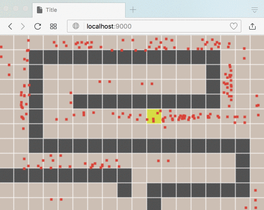
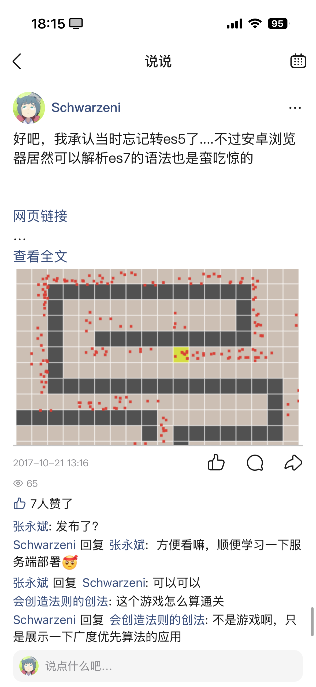

主要介绍了对于系统中使用到的数据是如何进行描述的，包括数据内部的结构以及数据之间的关系
引子
书中提到，数据建模非常重要，因为不但它影响软件是如何实现的，也会影响我们对于问题的思考方式。数据建模是一层套一层的，对于每一层来说，最重要的如何将当前层面中的相关抽象概念映射到下一层。比如：
【数据结构抽象】设计一个 app 时，app 的开发者一般会定义各种的数据结构以及使用这些数据结构的 API 。当需要存储这些数据结构时，app 的开发者并不需要关心这些数据结构是如何存储的，这是更低一层的数据存储系统需要关系的事情。
【数据建模抽象】在进行数据存储系统实现时，为了可以更高效地存储数据，会将数据以特点的结构来存储，比如说 JSON / XML ，或者存储在关系型数据库的 table 中，以及存储在一个图中的 vertices 和 edges 中。
【硬件存储抽象】相关的数据最终都是以 byte 的形式存储在硬件上的，数据库存储系统的开发者只用设计相关的 byte 是如何与相关硬件，例如内存或者磁盘进行交互，而不用关心 byte 在相关硬件上的存储形式。
通过对外提供抽象的接口，便于不同团队来进行高效协作。书中特别介绍了 Declarative Query Language ，这就是一个抽象的范例。与编程语言相比，declarative 类型的 query 语句仅定义了需要的数据条件以及对数据 transform 的方式。无需关心底层是如何实现这个功能的。
数据建模的抽象是本章的重点，首先重点介绍了经典的关系型数据建模和文档型数据建模，然后也介绍了图形数据建模，接着介绍了 Event Sourcing ，这其实算是更高层的一种数据处理模式，最后简单介绍了科学计算涉及到的相关数据建模，例如 DataFrames 和 Matrics 。
在 24 年 - 25 年离线建库系统升级时，对于建库的配置就进行了多层的抽象，首先的抽象了和业务相关的种种概念，比如上游数据源、建库字段、生效存储等，以及这些概念之间的关系。基于业务相关抽象的概念，设计了面向业务的配置。业务在进行配置填写的时候，不用关心相关配置是如何映射到各个建库模块的配置上的，这是更低一层的配置做的事情。
在对业务配置进行编译后，会生成业务粒度的一批 json 配置文件，这个是 source or truth 。各个模块的负责人基于业务层面的配置，编写相关的脚本来进一步自动生成模块层面的配置。当时有一个模块的负责人，没有理解架构师设计的用意，在编写脚本的时候还用到了其它配置文件中的内容，导致后面引入了不必要的麻烦。模块间联动的时候有问题，上游模块和下游模块看到的配置内容不一致。
Relational Model vs Document Model
说到关系型（relational）和文档型（Document），典型的数据库实现分别为 MySQL 和 MongoDB 。看着这两，就让我的思绪一下子回到了八九年前。当时是在读本科，从大二到大三期间学习了 Web 开发的相关知识，其中有两个经典的技术栈，分别为 LAMP 和 MEAN ，前者是 Linux + Apache + MySQL + PHP ，后者是 MongoDB + Express.js + AngularJS + Node.js 。我一开始接触的是 LAMP ，当时是用的 phpMyAdmin，其中包含了 LAMP 中的各个组件，不过当时感觉用起来非常复杂，完全是一个黑盒。后面接触到了 MEAN ，感觉和 LAMP 比起来，最大的特点是简单易上手，使用 Node.js 这个 bin 就可以启动一个 Web Server ，然后 MongoDB 单实例部署也不难。在学校里数据库相关的课程中重点介绍的是关系型的数据库，在用的时候需要显示定义表结构，用起来比较麻烦。而通过 MEAN 接触到 MongoDB 后，惊讶地发现不用定义啥表结构，直接往里面写数据就可以了。
书中提到，对于 Relational Model，数据是根据关系（relation）来进行组织的，在 SQL 里称为 table。对于每一个 table，都是一组无序的 tuples ，在 SQL 中称为 row。而对于 Document Model，最大的特点就是 schema flexibility ，也就是上面提到的，无需定义表结构。
对于 Relational Model，在真正使用时需要用到 ORM ，也即 object-relational mapping 。目标为建立起编程语言中的类和数据库中 table/row 的关系。ORM 的作用是作为一个中间层，让少写代码，但是也存在一些问题。其中的一个问题为 N + 1 query ，也即在跨表查询的场景下，如果是自己写的 query ，那么就会使用 join 来完成，而如果使用 ORM 不合理的话，会导致引入额外的一次针对额外表的查询。
需要跨表查询的一个场景为 one-to-many ，或者更严谨一点为 one-to-few ，在这种场景下，直接将 few 的原始值，而不是 id ，存储在 one 中会更自然一些，也能提高查询的效率，这种就是文档型建模。例如对于一个人的简历，将其中 job positions 和 education 的信息直接存在简历数据中，查询的时候可以读一张表就查到对应的数据。

按照关系进行分表和放在一个表的作法，分别称为 normalization 和 denormalization 。对于 normalization ，一个显而易见的好处就是修改方便，举例来说，假如一个人的简历中关联的学校名字变了，如果是 normalization ，那么只用对学校表中学校的名称进行修改即可。而对于 denormalization ，就需要修改主表中所有这个学校的名字。对于 denormalization ，它的优势则在于查询主表信息时，无需进行额外的 join 。综上可以看出，normalization 对数据修改/更新友好，并且由于少存了很多冗余数据，需要的存储量也相对较少。而 denormalization 对于大部分数据查询效率更高。所以没有谁比谁更优，可以结合起来使用，如果数据更新的频繁，对写入延时有要求，考虑 normailzed 。如果对读的性能有要求/更新不频繁，则 denormalized 。比如上一章提到的时间线的业务，使用 materialized timeline 来作为 cache ，预先计算 post 和 follow join 的结果。需要注意的是，这里仅预先计算了 post id 和 poster id ，在生成时间线数据的时候，还是需要查询的。原因是 post 中的内容/点赞数等信息时会变的，poster 的名称等基础信息也是会变的。另外还考虑了存储成本。
对于 Document Model 的使用场景，假如数据有一个 document-like structure （比如一个树型的 one-to-many 结构），并且每次读取的时候需要全部的字段，那么就可以用 Document Model 。另外需要注意的是，Document Model 宣称是 schema less 的，但是我们在读取数据的时候，其实默认其是有一个结构的，只不过数据库在存储时对其没有要求（schema-on-read vs schema-on-write）对于 schema 变更的场景，schema-on-read 可以在访问时进行兼容；schema-on-write 在数据变更就需要对数据进行迁移。Document Model 适合异构的数据结构 。有一点需要注意的是，如果需要频繁更新其中的一小部分内容，也会有一定的成本，因为数据中中所有的内容可能都会需要被重写。
对于 Relational Model ，书中还提到了在数据仓库中使用到的 stars 和 snowflake 两中 schema 模式。对于 stars，中心的 fact_scales table 记录一个 dimension 中各个子数据的 id 。对于 snowflake ，一个 dimension 被进一步拆分为多个子 dimension 。另外还有一种模式称为 one big table (OBT)，将所有的数据都放到一个大的 table 中。需要更多的存储，但是可以提升查询速度。
回顾四年多的工作经历，大部分和数据库相关的经历都是和运维 MongoDB 相关，使用数据库做业务开发的经验主要也就是用 MongoDB 存储一些 json 格式的数据，而 MySQL 只有几次慢查询故障问题排查的经历，所以在学习这一部分的时候没法和实际的工作内容进行联想，有点尴尬。由于常年运维 MongoDB，所以对使用表时是否开了分片 & 查询是否走了索引特别敏感，只要是我在开发中使用到了 MongoDB ，那么就建表时一定会开分片，在写查询语句时一定会确认相关查询字段是否加了索引，这已经成了条件反射了。
对于 schema 的定义，目前不管是用 Python 这类脚本语言，还是 Golang 这类编译语言，我在进行代码实现的时候都会将系统中预期使用到的数据结构都显示定义为 class 或者 struct ，为其中所有字段的作用都加上注释，并且在存的时候加上相关的校验逻辑，类似于离线建库 json 配置都必须有 json schema 的定义，以及在编译的时候必须先通过 schema 校验。没有 schema 的约束，东加一个字段西加一个字段，后面根本没法迭代和维护。上面提到的 schema less 确实只是在使用的时候没有 schema 也可以用，但是在进行正式的工程开发时，还是必须有 schema 约束的。
Graph-Like Data Models
主要用于处理 many-to-many 的数据关系。其中涉及两个概念，vertices （点）和 edges（边）。前者又称为 nodes 或 entities ，后者又称为 relationships 或 arcs 。有两种方式来描述 vertices 和 edges 的关系，第一种为 adjacency list ，每个 vertex 存储有临近 vertex 的列表 ，另一种为 adjacency matrix ，是一个二维数组，如果 vertex 有连接关系，则数据对应的值记为 1，否则为 0。印象中当时学校教数据结构时没有教 graph ，我后面是自己在 YouTube 上看着咖喱风味的英语教学视频自学的，当时比较喜欢用 adjacency list 来描述图结构，觉得这种存储方式相较于数组在新增和删除节点时更灵活。当时也正好在学 web 开发，就用 canvas 画了一个迷宫，然后让迷宫中随机升级的红点根据深度优先或广度优先的方式寻路找出口，并且直接通过鼠标点击新增或者删除构成迷宫的方格，感觉还是挺有意思的 hhh 。翻了半天的 qq 空间：


扯远了，拉回来。接下来介绍了 Property Graph ，又称 labeled property graph 。其中的 vertex 和 edge 除了存储基础的连接信息外，vertex 和 edge 中还存了 label 由于在检索时进行过滤，并且还存储了 kv 对。如果用关系型数据库来存储的话，其中包含了两个表和两个索引：

对在 Graph 进行查询时，可以使用 Cypher Query Language ，原先是作为 Neo4j 图数据库的查询语言，后面发展为了一个公开的标准 openCypher 。值得一提的是，这里的 Cypher 来源于电影《黑客帝国》中的一个角色。我严重怀疑这个 Neo4j 里的 Neo 就是来自于这个电影主角的名字。建表和查询语句样例如下：


既然我们可以用关系型数据库的表来描述 graph 的关系，那么我们是否可以用 SQL 来实现类似于的查询效果呢？书中给出了一大段复杂的 SQL 来实现 Cypher Query Language 中一个简单的查询语句。所以结论为，但是可能会比较复杂。之前也提到过，为了便于业务开发，底层的设施对外的接口是需要做好抽象的。最后介绍了一下 GraphSQL ，它允许在客户端直接执行查询语句。另外它是一种查询规范，服务端的数据库可以是各种类型的，relational、document、graph 都可以。
Event Sourcing and CQRS
书中本节介绍的 Event Sourcing ，我感觉是比前面提到的 Model 更上层的一种数据处理方式。大致的描述为，通过 event log 追加写的方式达到极致的写性能，这个 event log 是 source of truth 。在读端，根据业务需求定制 materialized view ，订阅 log 来持续生成 derived 的数据。而 CQRS （command query responsibility segregation），就是维护从同一个写优化的数据源中衍生出来的读优化数据展示。其实对于这种数据处理模式，有一点数据库处理数据方式的影子，也都是先写 log ，然后基于 log 来修改存储中数据的状态。就我个人而言，这种架构模式看着心里莫名的爽。

这种处理模式主要有几个好处：
可以降低写入端开发者的心理负担，相较于如何调整数据状态，直接忘存储里写实时的事件不论是理解还是开发起来，心智负担都低一些
衍生出来的 materialized view 是可重建的，也即如果代码有 bug ，那么只用在修复后回放 event 即可
可以基于不同的场景定制不同的 materialized view
由于 log 是不可变的，这个也便于进行审计
一般 log 是写到消息队列中的，可以做到削峰 + 高吞吐
不过也有几个问题需要注意：
如果包含了额外的数据源，需要确保写入和展示时数据的一致性。写入和展示时使用的额外数据源的版本需要是一致的（例如汇率），那么将数据写到 event 中，要么外部数据源查询时支持指定时间戳
个人信息不方便从 log 中删除（部分地区有个人隐私相关的法案）
需要注意回放日志时相关 event 是否为可重入的，例如确认邮件
所有 view 消费数据顺序的一致性
我个人感觉还有一个问题是 log 不可能无限追加，可能需要引入过期或者 compact 机制，但是如果是这样的话，materialized view 就不一定是可重建的了。需要根据实际的业务场景来进行设计。
总结
重点介绍了 Data Model 中的 Relational Model 和 Document Model ，还涉及到了 Graph-Like Data Model 。除了这些 Data Model 外，也介绍了 event sourcing ，将数据作为 append-only log 来呈现。